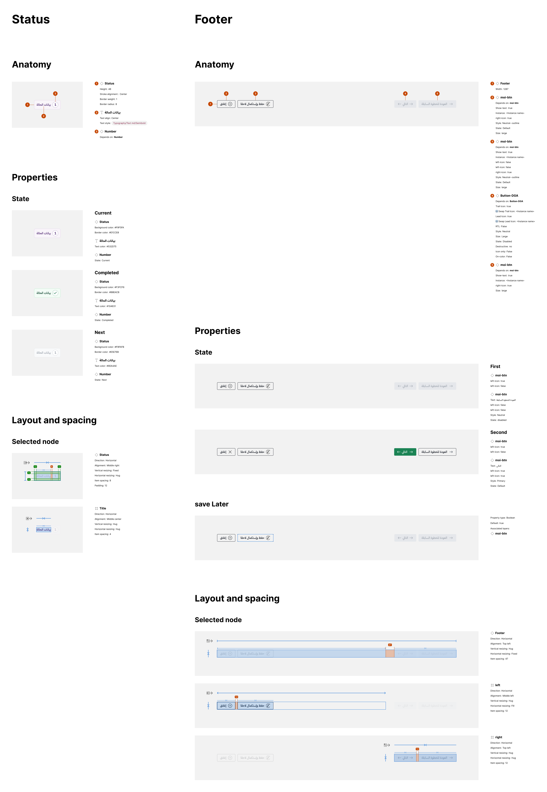

Stepper
Breaks long, ordered workflows into visible stages. This doc aligns the live SCSS implementation, the visual specification, and recommended behaviors.
-
Basic info
-
2People
-
3Summary
Purpose & when to use
Structure: .steps wrapper → li → .wizerd__item → .wizerdImage + label. Footer
actions live in .steeper__footer and .stepsNumber shows “Step X of Y”.
When to use
- Ordered, multi-step forms (3–7 steps) where sequence matters.
- Workflows needing progress context and state (current/completed/upcoming).
- Flows that require Save/Exit in a fixed footer.
When not to use
- Single-screen tasks or non-linear navigation—use tabs or inline sections.
- Unordered checklists—use a list with status chips instead.
- Menus or page navigation—this component is for progressive disclosure.
Anatomy
Stepper
-
.stepswraps the list; padding 14px, shadow, full width. -
Each
liinserts an arrow connector via::after; removed on the last item.
Step item
-
.wizerd__itempill; padding 6px x 12px; radius$radius-sm; gap 8px. -
Base colors: text
$Neutral-600, border$Neutral-200, background$Neutral-25.
Indicator
-
.wizerdImage34x34 circle, dashed border, centered content. - Can hold a number or icon; adds 2px padding in the completed state.
Progress text
-
.stepsNumberaligns “Step X of Y” with previous/next icons. - Badge inside uses 24px
circle with
$Gold-600background.
Footer
-
.steeper__footerwith top border$Neutral-200, padding 16px/14px. - Groups primary/secondary navigation and Save/Close actions.
Apply
the base .wizerd__item first, then add a modifier when needed.
Click any pill to copy its class list.
Visual specification
Complete anatomy, states, footer, and spacing reference. Use the SCSS tokens described above to match this rendering.

States & status
Current
- Class:
.wizerd__item--Currant. -
Lavender background (
$Lavender-50), dashed border ($Lavender-200), indicator border$Lavender-700.
Completed
-
Class:
.wizerd__item--Complated. -
Primary background (
$Primary-50), solid border ($Primary-200), indicator filled$Primary-500with white content.
Upcoming
- Base
.wizerd__item(neutral colors). - Do not combine multiple state modifiers on one item.
Edge cases
- For long sequences, offer a scrollable track or condensed step numbers.
- Disabled steps should not show focus or accent colors.
- Keep the order of number and label consistent in RTL by using inline margins.
- When steps correspond to long-running tasks, provide a loading indicator or progress status.
Layout & spacing
Horizontal (default)
- Single-row layout; each
lihas 12px left margin and a 20px arrow connector. - Keep labels short to avoid wrapping inside 34px indicator and pill.
Spacing tokens
- Wrapper padding 14px; item padding 6px x 12px; gap 8px.
- Indicator 34px circle; badge in
.stepsNumber24px.
Footer alignment
- Footer is a flex row with gap 12px; aligns nav buttons and Save/Close.
- Use primary for Next, neutral-outline for Previous/Save/Close per hierarchy.
Radial stepper
The radial stepper shows current versus total progress inside a 60×60 circular frame coupled with RTL text.
This markup mirrors radial-stepper.html.
الخطوة الأولى
وصف الخطوة التالية: اسم الخطوة
<div class="moi-radial-stepper" dir="rtl" style="--current:1; --total:4;">
<div class="moi-radial-stepper__content">
<h3 class="moi-radial-stepper__title">الخطوة الأولى</h3>
<p class="moi-radial-stepper__desc">
وصف الخطوة التالية:
<span class="moi-radial-stepper__step-name">اسم الخطوة</span>
</p>
</div>
<div class="moi-radial-stepper__ring" aria-label="التقدم: 1 من 4">
<svg class="moi-ring" viewBox="0 0 120 120" aria-hidden="true">
<circle class="moi-ring__track" cx="60" cy="60" r="46"></circle>
<circle class="moi-ring__progress" cx="60" cy="60" r="46"></circle>
</svg>
<div class="moi-ring__label" aria-hidden="true">
<span class="moi-ring__num">1</span>
<span class="moi-ring__word">من</span>
<span class="moi-ring__num">4</span>
</div>
</div>
</div>Anatomy
- .moi-radial-stepper is the RTL flex wrapper.
- .moi-radial-stepper__content houses the title + description.
- .moi-radial-stepper__title is the bold step title.
-
.moi-radial-stepper__desc contains flow text and the inline step name
(
.moi-radial-stepper__step-name). - .moi-radial-stepper__ring holds the fixed 60×60 ring.
- svg.moi-ring draws the ring (track + progress).
- .moi-ring__track is the light gray background track.
- .moi-ring__progress is the green arc driven by CSS variables.
- .moi-ring__label centers the numeric label; .moi-ring__num and .moi-ring__word style the typography.
Usage
-
Change
--current/--total(inline style or script) to drive the arc. - Use positive integers
with
current ≤ total. - Keep
colors/typography aligned to existing tokens (e.g.,
$Neutral-200,$Primary-500).
RTL & progress
-
Container uses
dir="rtl"; the arc remains visual progress (no mirroring). - Spacing (gap) keeps text vertically centered with the ring.
Accessibility
-
The ring wrapper carries an Arabic
aria-labeldescribing progress. -
Mark the SVG and center label as
aria-hidden="true"to suppress duplicate narration. - Keep DOM order so screen readers read the text before the ring indicator.
Content guidance
-
Do: keep the step name inside
.moi-radial-stepper__step-namewithin the same paragraph. - Don't: split the sentence into multiple block elements.
- Do: rely on shared color/typography tokens instead of hard-coded colors.
- Don't: introduce new colors not defined in the SCSS tokens.
Usage rules
Do
- Keep 3–7 steps; ensure logical sequencing.
- Show
progress text with
.stepsNumberand highlight the active step. - Validate on the current step and block forward navigation until resolved.
- Provide Save for later and Close in the footer when the flow allows pausing.
Don’t
- Reorder steps after the user starts.
- Mix multiple state classes on one item.
- Use long labels; keep to 1–3 words to avoid wrapping.
Accessibility & Behavior Rule
-
For
<button aria-label="السابق">the Previous control must be disabled, kept visible, and never removed from the DOM while the user is on the first step. - The button remains part of the tab sequence so focus does not jump and keyboard users always know the stepper structure before navigation becomes available.
Rationale:
- Visual consistency—every step renders the same footer layout.
- Predictable navigation—users always find the Previous control at the same spot.
- Keyboard navigation stability—tab order is preserved when the button is left in place.
- Screen reader continuity—disabled but present buttons still announce their state.
- Enterprise and Government UX compliance—meets stringent accessibility and documentation expectations.
Accessibility
-
Use
role="list"onulandrole="listitem"on each step. -
Set
aria-current="step"on the active.wizerd__item. - Ensure keyboard focus on all buttons; announce step labels as state changes.
- Maintain visible focus styles and contrast per SCSS colors.
Accessibility Notes
-
aria-label="السابق"must stay on the Previous button even when disabled so assistive technology continues to describe the control. - Keeping the button in the DOM preserves layout stability and avoids visual jumps when the step state changes.
- Preserving the original tab order keeps keyboard users in a predictable focus sequence from step to step.
- This handling aligns with enterprise and government accessibility standards that demand consistent, documented controls.
Developer API
Shows how to build the stepper using the current classes.
<ul class="steps d-flex gap-lg">
<li class="wizerd__item wizerd__item--Currant d-flex align-items-center gap-2" aria-current="step">
<div class="wizerdImage">1</div>
Step 1
</li>
<li class="wizerd__item d-flex align-items-center gap-2">
<div class="wizerdImage">2</div>
Step 2
</li>
</ul>-
Each item uses
.wizerd__itemwitharia-current="step"oraria-disabled. -
The active item gets the
.wizerd__item--Currantmodifier andaria-current="step". - Do
not remove buttons; apply
.is-disabledto maintain order.
Code example
Matches the implemented classes in _stepper.scss.
<div class="d-flex justify-content-between align-items-center rounded radius-sm steps">
<ul role="tablist" class="m-0">
<li role="tab" aria-disabled="false" aria-selected="true" class="first current" style="float: right;">
<div class="wizerd__item wizerd__item--Complated">
<div class="wizerdImage selectedWizerdImage">
<svg width="24" height="24" viewBox="0 0 24 24" fill="none" xmlns="http://www.w3.org/2000/svg">
<path d="M9.56433 15.8366C9.27438 15.4418 9.04454 15.1049 8.84254 14.8118L5.84556 10.3608C5.53956 9.91583 4.90055 9.79203 4.44255 10.088C3.98455 10.385 3.85654 11.0041 4.16154 11.4481L7.15956 15.899C8.05955 17.2088 9.81556 17.3751 10.9626 16.2627" fill="#25935F" />
<path d="M18.9912 6C18.7362 6 18.4692 6.08319 18.2742 6.27182L9.56418 14.8992C9.30718 15.1488 9.08091 15.1624 8.87891 14.8693C9.27594 15.4409 9.56418 15.8366C10 16.4349 10.5 16.3202 10.9672 16.2602L19.7082 7.6628C20.0972 7.28458 20.0972 6.65004 19.7082 6.27182" fill="#166A45" />
</svg>
</div>
البيانات الأساسية
</div>
</li>
<li role="tab" aria-disabled="false" aria-selected="true" class="first current" style="float: right;">
<div class="wizerd__item wizerd__item--Currant">
<div class="wizerdImage">2</div>
الأشخاص
</div>
</li>
<li role="tab" aria-disabled="false" aria-selected="true" class="first current" style="float: right;">
<div class="wizerd__item">
<div class="wizerdImage">5</div>
الملخص
</div>
</li>
</ul>
<div class="moi-radial-stepper" dir="rtl" style="--current:1; --total:4;">
<div class="moi-radial-stepper__content">
<h3 class="moi-radial-stepper__title">الخطوة الأولى</h3>
<p class="moi-radial-stepper__desc">
وصف الخطوة التالية:
<span class="moi-radial-stepper__step-name">اسم الخطوة</span>
</p>
</div>
<div class="moi-radial-stepper__ring" aria-label="التقدم: 1 من 4">
<svg class="moi-ring" viewBox="0 0 120 120" aria-hidden="true">
<circle class="moi-ring__track" cx="60" cy="60" r="46"></circle>
<circle class="moi-ring__progress" cx="60" cy="60" r="46"></circle>
</svg>
<div class="moi-ring__label" aria-hidden="true">
<span class="moi-ring__num">1</span>
<span class="moi-ring__word">من</span>
<span class="moi-ring__num">4</span>
</div>
</div>
</div>
</div>
<div class="w-100 p-3 d-flex align-items-center justify-content-between steeper__footer">
<div class="d-flex gap-4 steeper__footer--buttons">
<button class="btn moi-btn--Neutral--outline" type="button" aria-label="السابق">
<span class="icon icon-2xl" data-icon="previous-arrow"></span>
<span>السابق</span>
</button>
<button class="btn moi-btn moi-btn--Primary" type="button" aria-label="التالي">
التالي
<span class="icon icon-2xl" data-icon="next-arrow"></span>
</button>
</div>
<div class="d-flex gap-4 steeper__footer--buttons">
<button class="btn moi-btn--Neutral--outline" type="button" aria-label="حفظ واستكمال لاحقًا">
<span class="icon icon-2xl" data-icon="savelater"></span>
حفظ وإستكمال لاحقاً
</button>
<button class="btn moi-btn--Neutral--outline" type="button" aria-label="إغلاق">
<span class="icon icon-2xl" data-icon="close"></span>
إغلاق
</button>
</div>
</div>